Alucard has no reflection
Draft: not published yet
At 12:24 a.m. I was away from the computer and asked Claude what it could get done before 5 a.m. By 6:30 the wolf and the mist were visible for the first time. The mist blinks at 30 frames per second, because I picked blinking over the other two options Claude offered, a shadow effect or no mist at all.
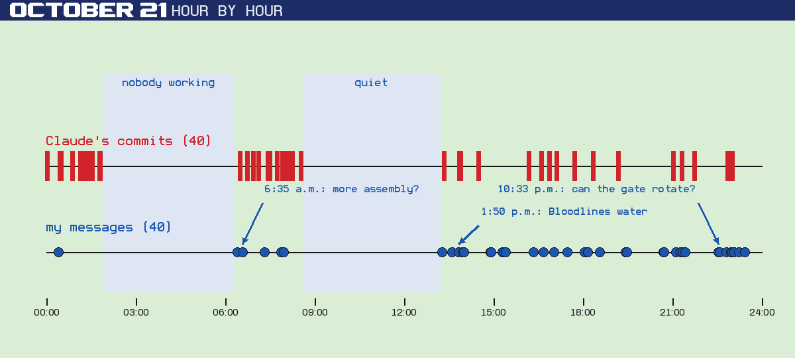
October 21. Two nights of work in one day: Claude's before dawn, mine after dinner.
"Accumulated gains"
At 6:35 a.m. I noticed Claude had rewritten a small piece of the game in assembly, the processor's own language, and wrote: consider the accumulated gains of doing this for more things. Ten minutes later the loop that walks through the entities at the end of every frame was in assembly too.
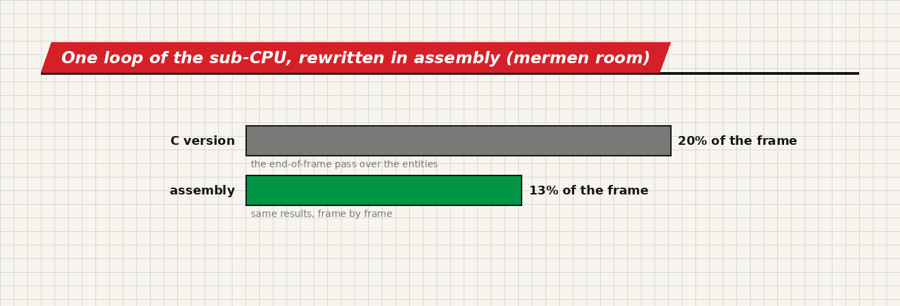
One loop, measured in the mermen room. Same results, frame by frame, a third cheaper.
It took almost a month for that sentence to become the project's rule. Today everything new in the port is written in assembly by default, because memory runs out before speed does, and hand-written code is smaller. On October 21 it was a suggestion I made before breakfast.
By 8:30 a.m. the disc had a second area. The teleport room of the Castle Entrance now led to the Alchemy Laboratory, loaded from the same CD.
My list, my rules
At 1:36 p.m. I sent a list. The dying warg spawns a new smoke cloud every two frames: cap it at three. The mermen: three at a time, and pick one water-entrance effect instead of two. The red door, which turns in 3D on the PlayStation: since the Mega Drive can't do that, dissolve it with dithering or something cheap. And the transformations: could the change between Alucard and the bat use a dithered blend too?
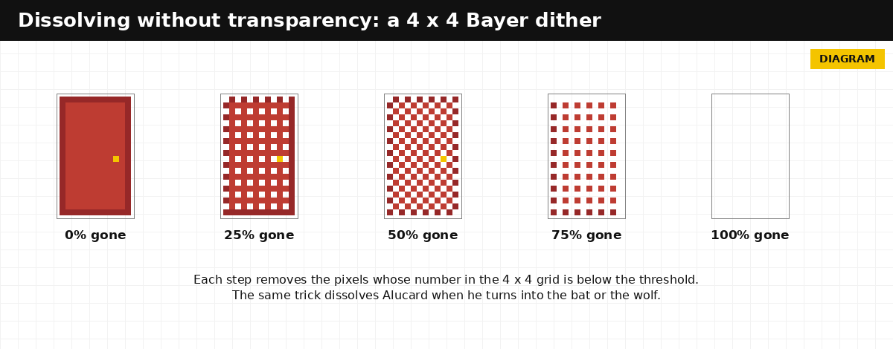
The dissolve, drawn out. Every step removes more pixels in a fixed 4 x 4 pattern. It costs a few extra tiles and no processing at all.

Alucard turning into the bat and back in the 4:36 p.m. build, rebuilt from that commit. The dither replaces the PlayStation's wavy distortion.

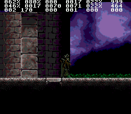
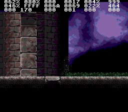


The same transformation, frame by frame, every 12 frames. Alucard thins out in the 4 x 4 pattern while the bat appears.
Bloodlines water
The water from the day before was still flashing the whole screen. I told Claude I'd look for a Mega Drive game with water I liked, and found it in our own family: Castlevania Bloodlines. Bloodlines doesn't do transparent water. It reflects the room in it. I sent Claude a summary of a video explaining the effect, and asked to replace Symphony's water with it.
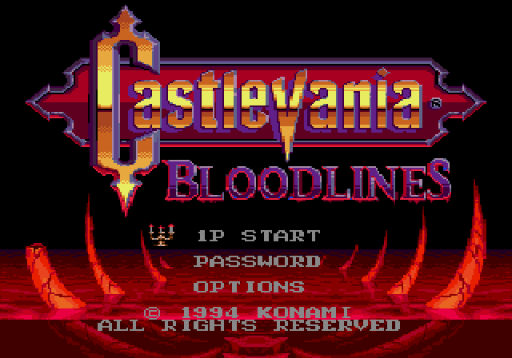
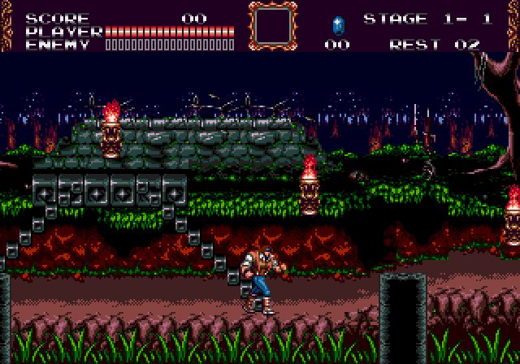
Castlevania Bloodlines (1994), captured from the cartridge in an emulator. The reflecting water comes later, in the second stage.
Then I added the most important rule of the day: Alucard is half vampire, so he has no reflection.
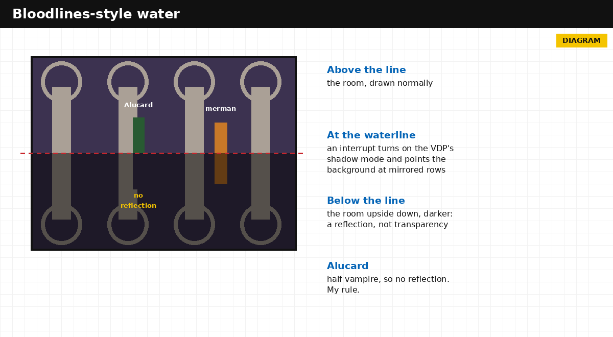
How the reflection works. The scene above the line, mirrored and darkened below it. Everyone gets a reflection except Alucard.
The trade was also technical. Transparent water meant drawing the swimming mermen all the time. With a reflection, they only need to exist when they jump out. At 6:34 p.m. I asked for two more touches I remembered from Bloodlines: the water level rising and falling by a few pixels, and a very subtle ripple in the reflection. Both arrived at 7:11 p.m.

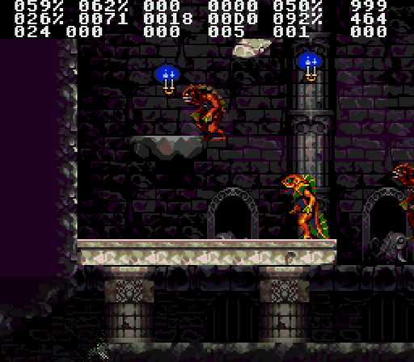
The same spot, a day apart. First: the palette-swap water from October 20. Then: the Bloodlines-style water from the 7:11 p.m. build, darker and mirrored, and a red merman that got his colors back.
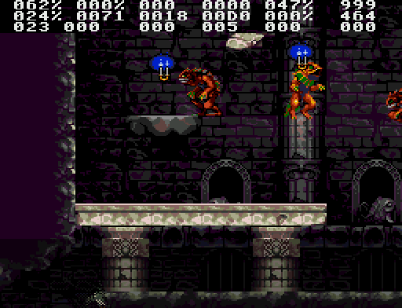
The mermen room in that build. Never more than three of them.
Gunstar detour
In the afternoon I asked Claude to analyze how Gunstar Heroes handles its explosions and bullets, from a memory dump of the game. The analysis made me ask an uncomfortable question: is the Mega CD still worth it, or should we move to a cartridge? And what about the 32X? We stayed on the Mega CD, and that conversation deserves its own post. What came out of Gunstar right away was smaller: room transitions faded by darkening the palette in eight steps, which costs almost nothing.

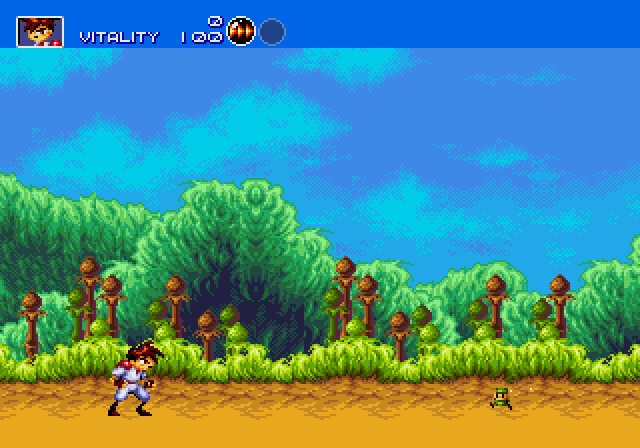
Gunstar Heroes (Treasure, 1993), captured from my own cartridge dump: the title and the first stage.

The 32X, the other way out I asked about. Photo: Evan-Amos, public domain, via Wikimedia Commons.

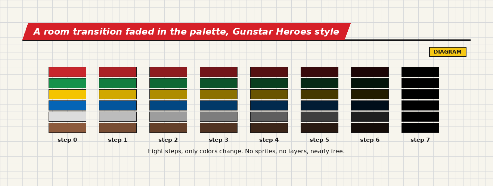
A fade to black done entirely in the colors. Gunstar Heroes does this; now the port does too.
Mermen on a diet
The mermen still weren't right at 4:40 p.m. My hunch was the entrance animations and the water effects they create, so I asked Claude to remove both splash effects for a test. At 5:02 I went further: one merman type in three colors, all with the yellow one's entrance, the red one's death, and only the fire-spitting attack. Simpler, I thought.
Claude's answer made me ask, at 5:29, whether the extra attacks and the two merman types made any difference to the processing at all. If not, we'd keep them. What I really cared about was something else: "Regardless of the moment, at the room entrance or during the fight, there must be at most 3 mermen present!" (Translated from Portuguese.) At the time, walking into that room could put seven of them on screen.
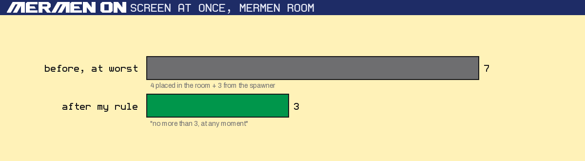
Seven at worst, then three.


The mermen room two days apart, same frame of the same run. First: October 19, palettes converted directly, water still missing. Then: October 21, Bloodlines-style water and the red merman's colors restored.
At 6:03 p.m. I asked whether the death animations had any randomness. They did: the red merman's death throws six pieces and six smoke clouds with random shapes and angles. I asked Claude to remove the dice. With fewer pieces, I argued, each one has to be placed so it looks good, or the result can come out lopsided.
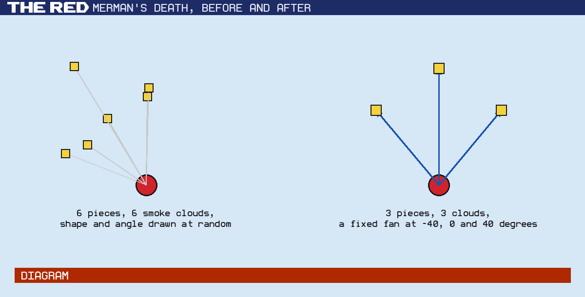
The red merman's death. Six random pieces became three in a fixed, symmetric fan.
Weeks later, going back over this with Claude, I understood my own request better. The dice cost almost nothing to roll; what weighed was the number of clouds. On the PlayStation, six random clouds work by brute force: even if three land in a pile, there's fire left to cover the rest of the body. Cut it to three and leave them random, and sometimes they all land in one corner. In this case, randomness was a tool for haste.
"With few resources, you start to really notice where RNG is actually an aesthetic decision."
(Translated from Portuguese.)
I also noticed that the red merman's sprite had been losing detail with each version, compared to the yellow one. The colors were being squeezed into a shared palette. Claude stopped squeezing them in that room.
The drawbridge
The game begins with Alucard running through a forest toward the castle while the drawbridge rises. That night the arrival bridge got connected, with the forest in the background and the bridge drawn from pre-rendered angles.

The opening run in the build from 11 p.m., rebuilt from that commit. The bridge rises in steps, and shakes.
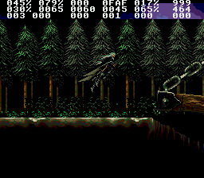


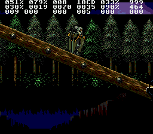
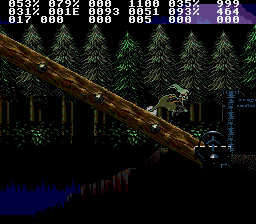
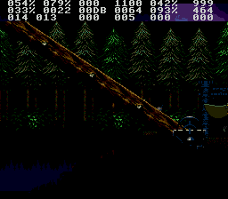
Six frames of the bridge, 20 frames apart. Each angle is a picture prepared during the build; the game only picks which one to show.
At 10:33 p.m. I pointed out that Mega Turrican manages to rotate, or at least fake rotating, platforms and sprites, and asked if there was a documented trick to rotate the bridge. The Mega CD even has a chip for scaling and rotation. Claude did the math and said no.
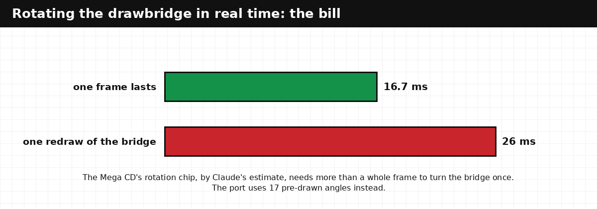
Turning the bridge once with the rotation chip would take longer than a frame, with the main processor waiting.
So I asked for something else: make the bridge shake while it rises. At 11 p.m. I asked for twice the amount. That's the GIF above.
The number
40 commits, 40 messages from me. Three mermen, no vampire reflections.
Tomorrow: the prologue gets its words, and a 3D coffin that a Mega Drive shouldn't be able to draw.
I decide what the port should be, draw and pick colors, and test every build. The code, tools and measurements are written by Claude (Anthropic's AI). This post was drafted by Claude from my chat messages and the project's commit history, and reviewed by me. The screenshots and GIFs come from rebuilding the port's code exactly as it was at the time shown.